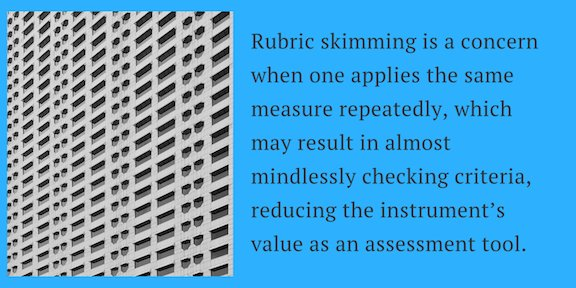
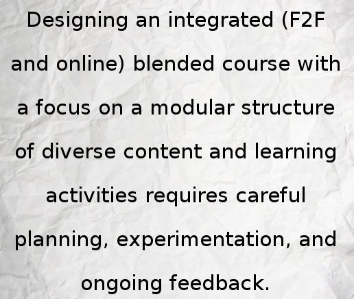

- Open SUNY OSCQR Rubric with resources, examples to assess course design & accessibility https://bbsupport.sln.suny.edu/bbcswebdav/institution/OSCQR/OSCQR-Links-BKP-2016-08-09.html … #BlendKit2017
- And of course UCF’s "Faculty Seminars in Online Teaching" podcast https://cdl.ucf.edu/teach-online/professional-development/faculty-seminars/ … #BlendKit2017
- With warmer weather time for listening to podcasts while walking! Check out Instruction by Design https://conhi.asu.edu/academic-innovation/teaching-learning-and-technology/instruction-design-podcast … #BlendKit2017
- Useful resources from @MERLOTorg #CourseDesign page (advanced search, course design, exact phrase) https://goo.gl/ooxLgm #BlendKit2017
- One of the many quotes that stand out in Quality Assurance in Blended Courses #BlendKit2017 pic.twitter.com/98PiG3y3Ls
- @mpondu Appreciating your take on rubrics and checklislts http://teachlearntechblog.blogspot.com/2017/03/quality-assurance-in-blending-learning.html … #blendkit2017
- .@lanihall Learned much from your blog post — thx. Your favorite quote is great, noting that one. #BlendKit2017
- Blog post on Quality Assurance in Blended Learning: One sentence summary, reaction, & helpful links http://teachlearntechblog.blogspot.com/2017/03/quality-assurance-in-blending-learning.html … #BlendKit2017
- Faculty Focus page tagged by Course Design Ideas http://www.facultyfocus.com/tag/course-design-ideas/ … #CourseDesign #BlendKit2017
- The challenge of implementing a one-size fits all rubric for course design would be daunting #BlendKit2017 #CourseDesign pic.twitter.com/RNziZ1Tpof
- A caveat in using the same standards rubric repeatedly over time #BlendKit2017 #rubrics pic.twitter.com/AvBlN6rYaU
- Great quote from Chapter: Quality Assurance in Blended Learning #BlendKit2017 #CourseDesign pic.twitter.com/QUabJuqOKZ
- An updated timeline of our #BlendKit2017 tweets https://storify.com/mpondu/blendkit2017 …
- A one-sentence summary of Chapter 5: Quality Assurance in Blended Learning #BlendKit2017 pic.twitter.com/p0v0e1opMo
- These are great! 5 Ways College Teachers Can Improve Their Instruction http://flip.it/Rln4Ww #Pedagogy #BlendKit2017
- Student trust & awareness of faculty willingness to help will grow if we regularly reveal our desire to do so. #BlendKit2017
- #BlendKit2017 students new to Twitter. Consider adding a short bio and photo to your profile https://support.twitter.com/articles/127871
- Thoughts and resources on Blended Content and Assignments: http://teachlearntechblog.blogspot.com/2017/03/blended-content-and-assignments.html … #BlendKit2017
- Chapter 4 Blended Content and Assignments in one sentence #BlendKit2017 pic.twitter.com/AFBIxhFNLb
- #BlendKit2017 hashtags embedded as a stream of tweets in Canvas page: https://elmira.instructure.com/courses/49/pages/blendkit-on-twitter …
- Great article on helping students (and you) read well on screens http://flip.it/DcB8v0 #BlendKit2017
- Teaching and Learning with digital behavioral and social science data https://www.icpsr.umich.edu/icpsrweb/content/instructors/teacher-resources.html … #BlendKit2017
- .@ProfHacker Fav Faculty Development blogs http://www.chronicle.com/blogs/profhacker/what-are-your-favorite-faculty-development-blogs/59083 … including Of Courses Online: http://ofcoursesonline.com/ #BlendKit2017
- Follow @MERLOTorg for timely tweets on links to higher ed news, blogs, and other related resources #BlendKit2017
- For Online Class Discussions, Instructors Move From Text to Video (but text still Important) http://flip.it/b0gIoY #FlipGrid #BlendKit2017
- Informal classroom #assessment techniques: step-by-step procedures: http://teaching.uncc.edu/learning-resources/articles-books/best-practice/assessment-grading/assessment-technique-examples … #BlendKit2017
- Muddiest Point: simple but effective way to determine what was least clear to students http://teachlearntechblog.blogspot.com/2011/11/evaluate-muddiest-point-with-online.html … #assessment #BlendKit2017
- Oft underutilized. Benefits of E-portfolios for Students & Faculty in Their Own Words https://tomprof.stanford.edu/posting/954 #assessment #BlendKit2017
- Promoting Academic Integrity in Online Education (PDF report) http://www.facultyfocus.com/free-reports/promoting-academic-integrity-in-online-education/ … @facultyfocus #BlendKit2017
- Summary and reaction to Blended Interactions with images and helpful links #BlendKit2017 http://teachlearntechblog.blogspot.com/2017/03/blended-interactions.html …
- A Learner-Centered Syllabus Helps Set the Tone for Learning @facultyfocus http://www.facultyfocus.com/articles/effective-classroom-management/a-learner-centered-syllabus-helps-set-the-tone-for-learning/ … #BlendKit2017 #jcftag
- Great game design quote that applies equally to the tension between degree of scaffolding and student learning! #BlendKit2017 pic.twitter.com/5Pjwi2YS7r
- .@glassbeed ’s guide (PDF) https://evenfromhere.files.wordpress.com/2011/08/online-communities1.pdf … is a great resource for planning & developing communities for learning #BlendKit2017
- Research article. Transforming a Course to Blended Learning for Student Engagement #BlendKit2017 #jcftag https://www.hindawi.com/journals/edri/2014/430732/ …
- A bit dated (dialup, WebCT) but still relevant: 10 Things I've Learned About Teaching Online #BlendKit2017 #jcftag http://elearnmag.acm.org/featured.cfm?aid=1609990 …
- Three big LX Ideas. What Faculty Need to Know About ‘Learner Experience Design’ https://www.edsurge.com/news/2016-11-10-what-faculty-need-to-know-about-learner-experience-design … #BlendKit2017
- University of Waterloo: Examples of blended courses: https://uwaterloo.ca/centre-for-teaching-excellence/resources/blended-learning/some-examples-blended-courses … #BlendKit2017
- Excellent Educause report on Blended Learning http://net.educause.edu/ir/library/pdf/ELI3023.pdf … #Competencies #GuidingPrinciples #BlendKit2017
- Case Study of a Hybrid-Format College Course http://psc100y.faculty.ucdavis.edu/ #BlendKit2017 #LearningObjectives